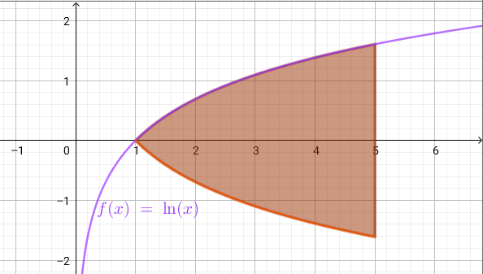
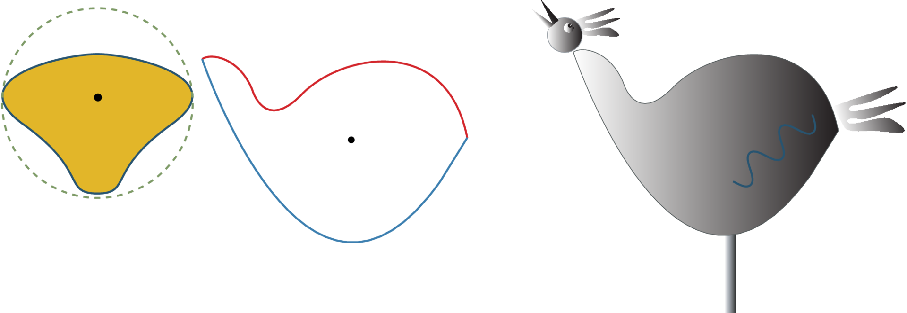

Integralregning for eksperter
Matematik A
Vibenshus Gymnasium
Viggo Brun (1885 - 1978)
Derivasjon er et håndverk,
integrasjon er en kunst!"
Brush-up
Hvis jeg påstår, at integralregning kan inddeles i to dele. Hvilke dele tænker I så på?
- Ubestemte integraler?
- Bestemte integraler?
Ubestemte integraler
Hvad tænker I på, når I hører dette?
- Det modsatte af at differentiere?
- Bestemmelse af stamfunktioner?
- Integrationskonstanter?
- Bestemmelse af stamfunktioner gennem specifikke punkter?
Bestemte integraler
Hvad tænker I på, når I hører dette?
- Bestemmelse af arealer under kurver?
- Øvre og nedre grænser?
- Ingen integrationskonstanter?
- Omdrejningslegemer?
Hvordan er integralregning opstået?
- Læs Over- og undersummer i matbhtx.systime.dk og få et af mange svar.
- I vil også lige få genopfrisket brugen af sumtegnet, \(\sum\).
Er der mere historie forbundet med integralregning (og differentialregning)?
Sure there is!!
Infinitesimalregningens historie
Vi vil gerne have mere historie!
Infinitesimalregningens fundamentalsætning
Antag at \(f \, : \, [a,b] \to \mathbb{R}\) er kontinuert. Da er \(f\) integrerbar i ethvert interval \([a,x]\), når \(a\leq x \leq b\). Funktionen
\[F(x) = \int_a^x \, f(t) \, dt\] er differentiabel, og \(F'(x) = f(x)\).
Korollar: \[\int_a^b f(t) \,dt = F(b) - F(a)\]
Et bevis
Lad os gøre det stille og roligt i hånden.
Her er mine håndskrevne noter
Se ca. det samme bevis her (nogle af symbolerne hedder noget andet)
Stamfunktioner/antiafledte
- Stamfunktioner er antiafledte funktioner.
- Der bruges STORE bogstaver for at angive stamfunktioner.
- Man kan tjekke om en stamfunktion er sand ved at differentiere og tjekke, om svaret giver den oprindelige funktion.
- Altså tjekke at \(F'(x) = f(x)\).
- Dette kaldes integrationsprøven.
Eksempel 1
Vi skal tjekke om følgende udsagn er korrekt:
\[\int 3 \cdot x \,dx \overset{?}{=} \frac{3}{2}x^2 + k\]
Højre side differentieres
\[\frac{d}{dx} \left( \frac{3}{2}x^2 + k \right) = \frac{3}{2} \cdot 2 x^1 = 3 x\]
Dette er lige integranden på venstre side, så udsagnet er korrekt.
Eksempel 2
Vi tjekker følgende udsagn:
\[\int \frac{1}{x^2}\,dx \overset{?}{=} \frac{1}{x^3} + k\]
\[\frac{d}{dx} \left( \frac{1}{x^3} + k \right) = \frac{d}{dx} \left( x^{-3} \right) = -3 x^{-4} = \frac{-3}{x^4}\]
Udtrykket er altså ikke sandt.
Opgave
Undersøg vha. integrationsprøven, hvilke af følgende udsagn, der er sande:
- \(\int 3 \,dx \overset{?}{=} 3x+k\)
- \(\int x^2 \,dx \overset{?}{=} \frac{1}{2}x^3+k\)
- \(\int \frac{1}{x^2} \,dx \overset{?}{=} \frac{1}{x}+5+k\)
- \(\int 0 \,dx \overset{?}{=} k\)
- \(\int \frac{6}{\sqrt{x}} \,dx \overset{?}{=} 12 \sqrt{x} -9 +k\)
- \(\int e^{2x} \,dx \overset{?}{=} 2 e^{2x} +k\)
- \(\int \left( e^x \right)^2 \,dx \overset{?}{=} \frac{9^x}{\ln \left( 9 \right)} +k\)
- \(\int - \ln \left( x \right) \,dx \overset{?}{=} 3 +x-x \cdot \ln \left( x \right)+k\)
Regneregler for stamfunktioner
Regnereglerne er lånt fra den centralt udleverede formelsamling til mat A.
Eksempel 1
Vi skal udføre det ubestemte integral \[\int x^2 - \frac{1}{x} + \sin(x) \,dx\]
- Først splittes integralet i mange små.
- \(\int x^2 - \frac{1}{x} + \sin(x) \,dx = \int x^2 \,dx- \int \frac{1}{x}\,dx + \int \sin(x) \,dx\)
- Hvert integral bestemmes hver for sig
- \(\int x^2 \,dx- \int \frac{1}{x}\,dx + \int \sin(x) \,dx = \frac{x^3}{3} + k_1 - \ln \left( \left| x \right| \right) +k_2 - \cos \left( x \right) +k_3\)
- Alle tre integrationskonstanter lægges sammen til en fælles integrationskonstant \(k\)
- \(\int x^2 - \frac{1}{x} + \sin(x) \,dx = \frac{x^3}{3} - \ln \left( \left| x \right| \right) - \cos \left( x \right) +k\)
Eksempel 2
Vi skal finde samtlige stamfunktioner til følgende funktion:
\[f(x) = \sqrt{x} +7\]
- \(F(x) = \int f(x) \,dx = \int \sqrt{x} + 7 \, dx\)
- \(F(x) = \int x^{\frac{1}{2}} \, dx + \int 7 \, dx\)
- \(F(x) = \frac{x^{\frac{1}{2}+1}}{\frac{1}{2}+1} + 7 x\)
- \(F(x) = \frac{2}{3}x^{\frac{3}{2}} + 7 x\)
- Når der står samtlige stamfunktioner, betyder det, at vi skal lægge en integrationskonstant til.
- \(F(x) = \frac{2}{3}x^{\frac{3}{2}} + 7x+k\)
Opgaver
Angiv, uden brug af CAS, følgende ubestemte integraler:
- \(\int \ln (x) - 2 x^{- \frac{1}{2}} \, dx\)
- \(\int 2 \sin \left( x \right) + 5 \cos \left( x \right) \, dx\)
- \(\int \frac{1}{x} + e^x \,dx\)
- \(\int x \cdot \left( \frac{1}{x}+1 \right) \,dx\)
- \(\int \frac{x^2-4}{x-2} \,dx\) (Denne kan være lidt drilsk :) )
Bestem, uden brug af CAS, samtlige stamfunktioner til følgende funktioner
- \(f(x) = x + \frac{1}{x}\)
- \(f(x) = \frac{4}{\sqrt{x}}\)
- \(f(x) = \pi\)
- \(f(x) =2^x + e^{2 x}\)
- \(f(x) = \frac{\cos (x) + 12 x}{4}\)
Beviser
Anvend integrationsprøven (differentier) til at bevise reglerne fra formelsamlingen:
Bestemte integraler
Anvendes til at bestemme arealer med fortegn mellem en funktion og x-aksen.
\begin{align*} \int_a^b f(x) \,dx = \left[ F(x) \right]_a^b = F(b) - F(a) \end{align*}
Arealer mellem graf og x-aksen med fortegn
Lad os undersøge det bestemte integral af \(\sin \left( x \right)\) med forskellige grænser:
Konklusion:
- Arealer over x-aksen er positive.
- Arealer under x-aksen er negative.
- Hvis man skal finde absolutte arealer, skal man sørge for at inddele integralet i flere mindre integraler ift skæringspunkter på x-aksen.
Opgaver
Opgave 1
For integralet
\[A = \int_1^5 0.1 x^2 +1 \, dx\]
- Skitser arealet i et koordatsystem.
- Beregn arealet uden brug af CAS.
Opgave 2
Følgende funktion er givet:
\[f(x) = -x^2+3x+4\]
- Bestem arealet, som er afgrænset af af den del af grafen for f, der er beliggende over x-aksen.
Opgave 3
Bestem arealet, der begrænses af grafen for \(f(x)=x^3\), x-aksen og linjerne \(x=-1\) og \(x=1\).
Opgave 4
Bestem arealet, der begrænses af x-aksen og grafen for
\[f(x) = (x+1)\cdot(x-3)\cdot(x-5)\,.\]
Areal mellem kurver
Nu skal I selv på opdagelse!
I skal undersøge/besvare spørgsmålene på de tre følgende slide:
Alle hjælpemidler er tilladte! (CAS, matematikbøger, beregninger i hånden, etc).
Hvordan vil I beregne arealet mellem 2 funktioner som begge ligger over x-aksen? F.eks. \(f(x)=- \frac{1}{4}x^2 + 4x +3\) og \(g(x)=\frac{1}{2}x + 1\) mellem \(a=2\) og \(b=14\)?.
Hvordan vil I beregne arealet mellem 2 funktioner, som begge ligger under x-aksen? F.eks. \(f(x)=- \frac{1}{4}x^2 + 4x -20\) og \(g(x)=\frac{1}{2}x -22\) mellem \(a=2\) og \(b=14\)?
Hvordan vil I beregne arealet mellem 2 funktioner, som ligger delvist over og under x-aksen? F.eks. \(f(x)=- \frac{1}{4}x^2 + 4x -10\) og \(g(x)=\frac{1}{2}x -12\) mellem \(a=2\) og \(b=14\)?
Opsumering
Hvad fandt I ud af?
Hvad der står i lærebøgerne.
Arealet mellem to grafer:
gælder altid lige gyldigt, om funktionerne er over, under eller delvist over eller under x-aksen. Dog skal \(f(x) \geq g(x)\) i intervallet \(x=[a\,;\,b]\).
Ekstra spørgsmål: Hvad vil der ske, hvis \(f(x)\) og \(g(x)\) krydser hinanden inden for integrationsintervallet?
Opgaver
Opgave 1
Bestem arealet af den lukkede figur, der dannes af følgende funktioner:
Opgave 2
Bestem det røde areal, som vist på figuren vha integralregning:
Ekstraopgave
Beregn en tilnærmet værdi af arealet af disse skønne solbrillers glas.

Integralregningens middelværdisætning
Sætning 10.11
For en kontinuert funktion \(f(x)\) findes der et tal \(c\) i et interval imellem \(a\) og \(b\) således at:
\[f(c) = \frac{F(b)-F(a)}{b-a} = \frac{1}{b-a} \int_a^b f(x) \,dx\]
Den fundne funktionsværdi kaldes for funktionens middelværdi i intervallet.
Opgave
Udvalgte løsningsmetoder
- Substitutionsmetoden
- Partiel integration
Substitutionsmetoden
Når integranden indeholder en sammensat funktion, kan integralet nogen gange løses vha. substitutionsmetoden.
Sætning 3.1
Hvis \(f\) og \(g\) er kontinuerte funktioner, og \(g\) er differentiabel, gælder ved sammensætning af \(f\) og \(g\), at
\[\int f(g(x))\cdot g'(x) \,dx = F(g(x))\,.\]
Metoden kaldes integration ved substitution.
- Den er ikke så anvendelig lige nu, men prøv lige at bevis den.
- Anvend integrationsprøven til at bevise det.
- (Altså differentiér begge sider af lighedstegnet og tjek, at de to sider stadig er lig hinanden).
Anvendelse
Et eksempel siger ofte mere end en sætning. Vi ser på integralet
\[\int \cos \left( 2 x \right)\,dx\]
- Først sættes den indre funktion \(g(x)\) til at være \(2x\) og den får også lige et andet navn f.eks. \(t=2x\).
- Nu kan integralet skrives som \[ \int \cos \left( t \right) \,dx\]
- Men vi kan ikke have blandinger af \(t\) og \(x\).
- Et udtryk for \(dx\) kan findes ved at differentiere udtrykket for \(t\) og så isolere \(dt\) i ligningen (som var \(\frac{dt}{dx}\) bare en brøk). \[\frac{dt}{dx} = 2 \to dx = \frac{dt}{2}\]
Nu kan integralet skrives som \[\int cos (t) \cdot \frac{dt}{2} = \frac{1}{2} \int \cos (t) \,dt\]
- Integralet mht \(t\) kan nu simpelt udregnes \[\frac{1}{2}\int \cos (t) \,dt = \frac{1}{2} \sin (t) + k\].
- Men vi er ikke færdige endnu. Vi skulle jo integrere mht \(x\) og ikke \(t\).
- Sidste skridt er at indsætte det oprindelige udvalgte udtryk for \(t\) , altså \[\frac{1}{2} \sin (t) + k = \frac{1}{2} \sin (2x) + k\]
- Altså gælder \[\int \cos \left( 2x \right) \,dx = \frac{1}{2} \sin \left( 2x \right) +k\]
Et andet forsøg
Hvad så med
\[\int \cos \left( x^2 \right) \,dx\].
- Der forsøges med \(t= x^2\), så integralet bliver \[\int \cos \left( t \right) \,dx\].
- Så findes et udtryk for \(dx\) \[\frac{dt}{dx} = 2 x \to dx = \frac{dt}{2x}\]
- Her er der et problem! \[\int \cos (t) \cdot \frac{dt}{2x}\]
- Man kan ikke have en blanding af \(t\) og \(x\), når der integreres.
et tredje eksempel
Det her ser svært ud:
\[\int x \cdot \sqrt{x^2-7} \,dx\]
Indfører \(t = x^2-7\) og \(\frac{dt}{dx} = 2x \to dx = \frac{dt}{2x}\)
\[\int x \cdot \sqrt{x^2-7} \,dx = \int x \cdot \sqrt{t} \cdot \frac{dt}{2x} = \frac{1}{2} \int \frac{x \sqrt{t}}{x} \,dt = \frac{1}{2}\int \sqrt{t} \, dt\]
Nu kan integralet løses nemt \[ \frac{1}{2}\int \sqrt{t} \,dt = \frac{1}{2}\int t^{\frac{1}{2}}\, dt = \frac{1}{2} \frac{t^{\frac{3}{2}}}{\frac{3}{2}} + k = \frac{1}{3}t^{\frac{3}{2}}+ k\]
Til sidst indsættes det oprindelige udtryk for \(t\) på \(t\)'s plads således at \[\int x \cdot \sqrt{x^2-7} \,dx = \frac{1}{3} \left( x^2-7 \right)^{\frac{3}{2}} +k\]
Opgaver
Bestem de følgende ubestemte integaler vha substitutionsmetoden.
- \(\int \left( 3x -2 \right)^4 \,dx\)
- \(\int \cos \left( x^3 \right) x^2 \,dx\)
- \(\int x \cdot \tan \left( x^2 \right)\,dx\)
- \(\int 2^x \cdot \sqrt{2^x} \,dx\) (Denne kræver nogle omskrivninger først).
Substitutionsmetoden og bestemte integraler
Sætning 3.2
Hvis \(f\) og \(g\) er kontinuerte funktioner i intervallet fra \(a\) til \(b\), og \(g\) er differentiabel, gælder ved sammensætning af \(f\) og \(g\), at
\[\int_a^b f(g(x)) \cdot g'(x) \,dx = \int_{g(a)}^{g(b)}f(t)dt\]
Det vigtige: Integrationsgrænserne skal tilpasses!
På opdagelse
Find ud af hvad det vil sige, at integrationsgrænserne skal tilpasses. Alle hjælpemidler er tilladte.
Eksempel
\[\int_0^2 5 x \cdot \sqrt{2x^2+3} \,dx\]
Indfører \(g(x)=t=2x^2+3\) og \(\frac{dt}{dx} = 4x \to dx = \frac{dt}{4x}\).
Integralet er nu \[\int_{g(0)}^{g(2)} 5x \cdot \sqrt{t} \cdot \frac{dt}{4x} = \frac{5}{4}\int_{g(0)}^{g(2)} \sqrt{t} \,dt\]
Grænserne udregnes og indsættes i integralet \[g(0) = 3 \text{ og } g(2)=2 \cdot 2^2 +3 = 11\]
\[\frac{5}{4}\int_{3}^{11} \sqrt{t} \,dt = \frac{5}{4}\left[ \frac{t^{\frac{3}{2}}}{\frac{3}{2}} \right]_3^{11} = \frac{5\cdot 2}{4\cdot 3}\left[ t^{\frac{3}{2}} \right]_3^{11}=\frac{5}{6}\left[ t^{\frac{3}{2}} \right]_3^{11}= \frac{5}{6} \left( 11^{\frac{3}{2}}-3^{\frac{3}{2}} \right) = 26.07\]
Det bestemte integrale kan også løses vha de oprindelige grænser, hvis man finder stamfunktionen vht \(x\) i stedet for \(t\).
\[\int_0^2 5x \cdot \sqrt{2x^2+3} \,dx = \frac{5}{6} \left[ \left( 2x^2+3 \right)^{\frac{3}{2}} \right]_0^2=\frac{5}{6}\left( 11^{\frac{3}{2}}-3^{\frac{3}{2}} \right) = 26.07\]
Hvordan I vil gøre det, er helt op til jer.
Opgaver
Bestem de følgende bestemte integaler vha substitutionsmetoden.
- \(\int_2^{4} \left( x -2 \right)^3 \,dx\)
- \(\int_1^\pi x \cdot \cos \left( x^2-1 \right)\,dx\)
- \(\int_0^{\frac{\pi}{2}} \sin(x)^2\cdot \cos(x)\,dx\)
\(\int_{-5}^5 \frac{-1}{x-7}\,dx\)
(Selve substitutionen er rimelig simpel, men tungen skal holdes lige i munden, når der skal bruges logaritmeregneregler.)
Partiel integration
Der er som sådan ingen produktregel indenfor integralregning, men partiel integration tager udgangspunkt i produktreglen fra differentialregning.
Kan nogen gange anvendes, når integranden er (eller kan skrives som) et produkt af to funktioner.
Udledning
Begynder med produktreglen fra differentialregning.
\[\left( f(x) \cdot g(x) \right)' = f'(x) \cdot g(x) + f(x) \cdot g'(x)\]
Integrerer på begge sider af lighedstegnet.
Omarrangerer til
Man skal altså undervejs finde antiafledte (stamfunktioner). Den antiafledte til \(f'(x)\) er \(f(x)\). \[\int f'(x) \cdot g(x) \,dx = f(x) \cdot g(x) - \int f(x) \cdot g'(x) \,dx\]
Lad os omskrive til noget, som står I jeres matematikbog.
Hvis \(f'(x)\) i integranden på venstre side af lighedstegnet blot skrive som \(f(x)\) så må \(f(x)\) på højre side af lighedstegnet skrives som \(F(x)\) (stamfunktionen) i begge led, altså
\[\boxed{\int f(x) \cdot g(x) \,dx = F(x) \cdot g(x) - \int F(x) \cdot g'(x) \,dx}\]
Det samme kan også gøres for \(g(x)\): \[\boxed{\int f(x) \cdot g(x) \,dx = f(x) \cdot G(x) - \int f'(x) \cdot G(x) \,dx}\]
Partiel integration gælder også for bestemte integraler:
\[\boxed{\int_a^b f(x) \cdot g(x) \,dx = \left[F(x) \cdot g(x)\right]_a^b - \int_a^b F(x) \cdot g'(x) \,dx}\]
\[\boxed{\int_a^b f(x) \cdot g(x) \,dx = \left[f(x) \cdot G(x)\right]_a^b - \int_a^b f'(x) \cdot G(x) \,dx}\]
Gode råd til partiel integration
- Forsøg med metoden, når integranden består af et produkt af to funktioner.
- Metoden kan være brugbar, hvis en af de to faktorer i funktionen forsinder i processen.
- Vælg \(f\) og \(g\) , så der er noget, som (forhåbentligt) forsvinder ved differentiation eller integration.
Kan det så bruges til noget?
\[\int x \cdot \sin(x) \,dx\]
Vælger \(f(x)=x\) og \(g(x)=\sin(x)\) og anvender \[\int f(x) \cdot g(x) \,dx = f(x) \cdot G(x) - \int f'(x) \cdot G(x) \,dx\]
\[\int x \cdot \sin(x) \,dx = x \cdot \left( -\cos(x) \right) - \int 1 \cdot \left( -\cos(x) \right) \,dx = -x\cdot \cos(x) + \sin(x) + k\]
Hvad sker der, hvis vi bytter om på \(f(x)\) og \(g(x)\)? \[\int x \cdot \sin(x) \,dx\]
Vælger \(g(x)=x\) og \(f(x)=\sin(x)\) og anvender \[\int f(x) \cdot g(x) \,dx = f(x) \cdot G(x) - \int f'(x) \cdot G(x) \,dx\]
Det blev ikke ligefrem nemmere. :)
Opgaver
Anvend partiel integration til at bestemme de følgende ubestemte integraler uden brug af CAS.
- \(\int x \cdot e^x\,dx\)
- \(\int x^2 \cdot \ln(x)\,dx\)
- \(\int x \cdot 2^x\,dx\)
- \(\int \ln(x)^2\,dx\) (omskriv integranden til \(\ln(x)\cdot \ln(x)\))
- \(\int \sin\left(\sqrt{x}\right) \,dx\) (brug først substitutionsmetoden med \(t=\sqrt{x}\) og brug efterfølgende partiel integration).
Et andet eksempel
\[\int \sin(x) \cdot \cos(x) \,dx\]
Vælger \(f(x)=\sin(x)\) og \(g(x)=\cos(x)\) og anvender \[\int f(x) \cdot g(x) \,dx = f(x) \cdot G(x) - \int f'(x) \cdot G(x) \,dx\]
\[\int \sin(x)\cdot\cos(x)\,dx = \sin(x) \cdot \sin(x) - \int \cos(x) \cdot \sin(x) \,dx\]
\[\int \sin(x)\cdot\cos(x)\,dx = \sin(x) \cdot \sin(x) - \int \cos(x) \cdot \sin(x) \,dx\]
Her ses det, at integralet på venstre side er identisk med sidste integral på højre side.
Derfor isoleres integralet i ligningen:
Til sidst skal vi lige huske integrationskonstanten. \[\boxed{\int \sin(x) \cdot \cos(x) \,dx = \frac{1}{2}\cdot \sin (x)^2 +k}\]
Hvad nu, hvis vi bytter om på \(f(x)\) og \(g(x)\)? \[\int \sin(x) \cdot \cos(x) \,dx\]
Vælger \(f(x)=\sin(x)\) og \(g(x)=\cos(x)\) og anvender \[\int f(x) \cdot g(x) \,dx = F(x) \cdot g(x) - \int F(x) \cdot g'(x) \,dx\]
Hov, umiddelbart har vi fået 2 forskellige stamfunktioner.
Første metode gav os \[\int \sin(x) \cdot \cos(x) \,dx = \frac{1}{2}\cdot \sin (x)^2\]
Anden metode gav os \[\int \sin(x) \cdot \cos(x) \,dx = -\frac{1}{2}\cdot \cos (x)^2\]
De to funktioner er ikke umiddelbart ens.
Men de kan blive ens, med det rette valg af integrationskonstant.
Hvilken?
Ja, det er rigtigt. Der er kun \(1/2\) til forskel mellem de to funktioner.
Det passer også med idiotformlen (trigonometriens grundrelation). \[\sin(x)^2+\cos(x)^2 = 1 \to \frac{1}{2}\sin(x)^2 = - \frac{1}{2}\cos(x)^2 + \frac{1}{2}\]
Konklusion: \[\int \sin(x)\cdot \cos(x) \,dx = \frac{1}{2}\cdot \sin(x)^2 + k\] eller \[\int \sin(x)\cdot \cos(x) \,dx = - \frac{1}{2}\cdot \cos(x)^2 + k\] da det rette valg af integrationskonstant kan bringe de to stamfunktioner til at være ens.
Anvendelse af integralregning
Omdrejningslegemer
Rumlige figurer, der fremkommer ved symmetrisk rotation af et tværsnit om en ret linje.
Tænk på en drejebænk, en trædrejer og at dreje vaser i ler.
Omdrejninglegemerne fremkommer typisk ved at dreje funktioner omkring enten x-aksen eller y-aksen.
\(f(x)=x^2\) drejet om x-aksen:
\(f(x)=x^2\) drejet om y-aksen
Hvordan gør man så det?
Drejning om x-aksen
Når en kontinuert positiv funktion \(f\) defineret i intervallet \(x_1 \leq x \leq x_2\) drejes \(360^{\circ}\) om x-aksen, opstår et rumligt objekt med rumfanget
\[V_x = \int_{x_1}^{x_2} \pi \cdot f(x)^2\,dx\]
- Tænk på en hel masse cylindre lagt sammen.
Eksempel
Lad os finde rumfanget af vores "snurretop" fra eksemplet:
- Grænserne vælges til \(x_1=0\) og \(x_2=2\).
- Alt indsættes i formlen. Integralet kan "let" bestemmes.
Drejning af areal mellem to funktioner omkring x-aksen
For to positive kontinuerte funktioner \(f(x)\) og \(g(x)\) defineret i intervallet \(x_1\leq x \leq x_2\) opstår der er rumtligt objekt, når arealet mellem de to funktioners grafer og linjerner \(x=x_1\) og \(x = x_2\) roteres \(360^{\circ}\) om x-aksen. Rumfanget bestemmes som:
\[V_x = \pi \int_{x_1}^{x_2} f(x)^2 - g(x)^2 \, dx\]
Drejning om y-aksen
Når en kontinuert positiv funktion \(f\) defineret i intervallet \(x_1 \leq x \leq x_2\) drejes \(360^{\circ}\) om y-aksen, opstår et rumligt objekt med rumfanget
\[V_y = 2 \pi \int_{x_1}^{x_2} f(x)\cdot x\,dx\]
- Her skal I tænke på en hel masse cylinderringe langt sammen.
- (Det er nok ikke lige så nemt at huske på cylinderringe, da de ikke er brugt lige så ofte som cylindre).
Eksempel
Lad os finde rumfanget af vores "skål" fra eksemplet:
- Grænserne vælges til \(x_1=0\) og \(x_2=2\). (Læg mærke til valget)
- Alt indsættes i formlen. Integralet kan "let" bestemmes.
Drejning af areal mellem to funktioner omkring y-aksen
For to positive kontinuerte funktioner \(f(x)\) og \(g(x)\) defineret i intervallet \(x_1\leq x \leq x_2\) opstår der er rumtligt objekt, når arealet mellem de to funktioners grafer og linjerner \(x=x_1\) og \(x = x_2\) roteres \(360^{\circ}\) om x-aksen. Rumfanget bestemmes som:
\[V_y = 2\pi \int_{x_1}^{x_2} \left(f(x) - g(x)\right) \cdot x \, dx\]
Opgaver
Opgave til virtuel undervisning
- Find en sjov genstand i hjemmet, som er rotationssymmetrisk.
- Tag et billede af genstanden. Sørg for at der er noget med i billedet, som I kender størrelsen på og som er i samme afstand til kameraet, som genstanden (f.eks. et tommestok).
- Udveksl genstande med hinanden to og to, og hjælp hinanden med at beregne rumfangene af jeres genstande vha integralregning.
Dette kan f.eks. gøres ved at:
- indsætte billedet i geogebra
- skalere billedet så akser passer med den virkelige størrelse
- indsætte punkter langs en oplagt profil
- fitte en eller flere funktioner til disse punkter
- beregne rumfang vha integralregning og rotation om x- eller y-aksen
- Hvis muligt, tjek da rumfanget ved at hælde vand i genstanden og mål efterfølgende denne vandmængde i et måleglas (eller på en vægt).
Hvor kommer formlerne fra?
Beviser
Give it up for Jim Larsen McLean
Find videoen her: https://youtu.be/aBYsvrrgRCk
Udledning af rumfangsformel for kugle
En kugles rumfang beregnes som bekendt med
\[V_\text{kugle} = \frac{4}{3} \cdot \pi \cdot r^3\]
Lad os se, hvordan denne formel kan udledes.
Først opskrives cirklens ligning for en generel cirkel med centrum i origo og med radius \(r\)
\[x^2 + y^2 = r^2\]
Denne omskrives til en funktion ved at isolere y \[y = \pm \sqrt{r^2 -x^2}\]
Her udvælges kun overbollen \[f(x)=\sqrt{r^2-x^2}\]
\[f(x)=\sqrt{r^2-x^2}\]
Rumfanget bestemmes ved at rotere den halve overbolle \(360^{\circ}\) om x-aksen, og så multiplicere resultatet med 2. \[V_x = 2 \cdot \pi \int_{x_1}^{x_2} f(x)^2 \,dx\]
Grænserne vælges til \[x_1=0 \text{ og } x_2=r\]
Integralet kan nu løses
Nu kan de forskellige led samles
Formlen er nu udledt. :)
Opgaver
Udled formlen for rumfanget af en kegle vha omdrejningslegemer omkring enten x- eller y-aksen
Formlen er
\[V_\text{kegle} = \frac{\pi}{3}\cdot h \cdot r^2\]
Udled formlen for rumfanget af en keglestub vha omdrejningslegemer omkring enten x- eller y-aksen
Formlen er
\[V_\text{keglestub} = \frac{\pi}{3}\cdot h \cdot \left(R^2+r^2+R\cdot r\right)\]
Kurvelængder
Formel
For en differentiabel funktion i intervallet \([a\,,\,b]\) findes kurvelængden ved følgende integral:
\[l_f = \int_a^b \sqrt{1 + f'(x)^2} \,dx\]
Eksempel
Langt de fleste af disse integraler kan kun løses vha et CAS-værktøj, som benytter numerisk integration. Det er meget sjældent at en faktisk stamfunktion kan findes.
Regneopgaver
Find kurvelængderne af følgende funktioner i intervallerne \([a,b]\). De kan begge løses i hånden.
- \(f(x)= \frac{4}{3} x +2 \,, \quad [a,b] = [0,3]\)
- \(f(x)= \frac{2}{3}x^{\frac{3}{2}}\,,\quad [a,b] = [0,8]\)
Fysisk opgave
- Find en lille bold, eller noget andet, som kan tåle at blive kastet.
- Find et sted at kaste bolden, hvor det er muligt at optage kastes vha kameraet i computeren, således at hele boldens bane kan ses på optagelsen.
- Aftal med en kammerat, at vedkommende optager en video af dig, som kaster bolden. Dette kan gøres gennem teams.
- Mål eller estimer boldens start-, top- og slutposition ud fra videoen.
- Brug punkterne til at opstille en forskrift for boldens bane.
- Beregn længden af boldens flugt vha integralregning.
- Hav videoer og beregninger klar, så I kan vise dem til jeres klassekammerater senere.
Bevis
Her har I et bevis udført af min gamle "rusvejleder" fra min universitetstid. Martin Patrong Haspang bedre kendt som Hålle. :)
Linket er https://youtu.be/fauiaWTrORA
Overfladearealer
Formel
For en kontinuert funktion \(f\) defineret i intervallet \([a,b]\) findes overfladearealet af det legeme, der opstår, når området imellem grafen for \(f\) og x-aksen roteres \(360^{\circ}\) om x-aksen på følgende måde:
\[A_\text{overflade} = 2 \pi \int_a^b f(x) \cdot \sqrt{1 + f'(x)^2} \,dx\]
Eksempel

Opgaver
En specifik opgave
- Bestem overfladearealet af den kegle, som fremkommer, når den viste punktmængde roteres om x-aksen.
Hints: Bestem først en funktion for en ret linje gennem \(A\) og \(B\). Brug herefter integralregning.
En generel opgave
Overfladearealet af en kegle beregnes som
\[O = \pi \cdot r \cdot \sqrt{r^2 + h^2}\]
- Udled ovenstående formel vha integralregning og følgende figur til hjælp.
Hints: Angiv en forskrift for den skrå rette linje. Angiv passende grænser på integralet. Anvend en række algebraregler, når integralet først er løst.
Massemidtpunkter

Formel
For to kontinuerte funktioner \(f\) og \(g\), hvor \(f>g\) i intevallet \([a,b]\), findes massemidtpunktet som
\begin{align*} (x_m, y_m) &= \left( \frac{\int_a^b \left( f(x) - g(x) \right)\cdot x \, dx}{\int_a^b f(x) - g(x) \, dx } \, , \, \frac{\frac{1}{2}\int_a^b f(x)^2-g(x)^2\, dx}{\int_a^b f(x) - g(x) \, dx} \right) \end{align*}
Forklaring
Forklaringen kan findes i jeres matematikbog her: https://mathtxa.systime.dk/?id=403
Opgave
- Opfind jeres eget areal, som er indesluttet af to funktioner.
- Tegn funktioner og det indesluttede areal ind i et koordinatsystem.
- Find skæringspunkterne mellem de to grafer. Disse skal bruges som grænser i det kommende integral.
- Beregn massemidtpunktet vha formlen fra tidligere. Brug kun CAS, hvor det er nødvendigt.
- Print eller tegn grafer og areal over på et stykke karton, og klip figuren ud. (Hvis I kun har papir til rådighed og ikke nogen printer, så hold papiret op på jeres computerskærm og tegn figuren af over på papiret. Man kan nok lige skimte figuren igennem papiret.)
- Se om I kan få jeres figur til at balancere i jeres beregnede massemidtpunkt. (Hvis I har en nål, så lave en lille fordybning/et lille hul i papiret, så nålen ikke glider.)

Matematikprojekt
5 min fordybelse
- Nedskriv dine egne refleksioner over dagens under.
- Foregår i tavshed.